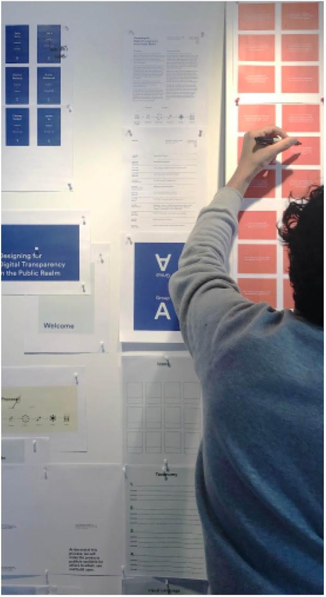
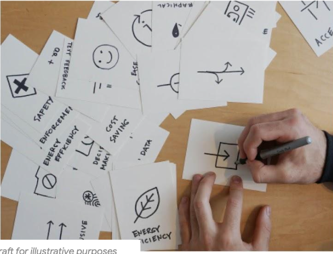
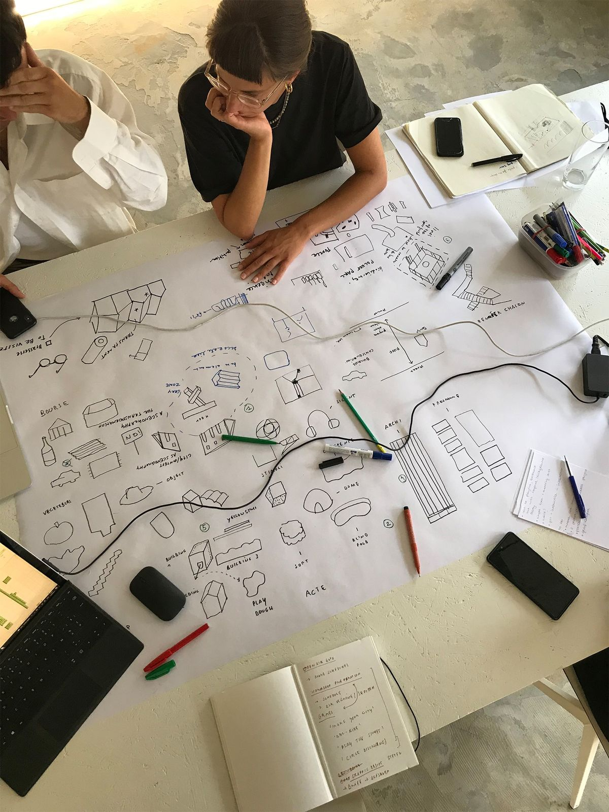
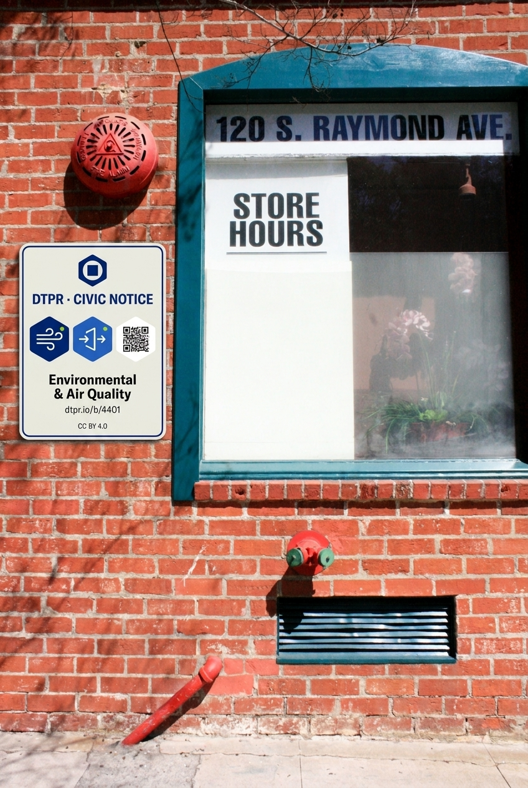

The photographic register
The DTPR photographic register captures participatory civic design in action. When photography appears, it documents the collaborative, human work of negotiating digital rights, transparency, and accountability in the public realm: co-design workshops, tactile icon prototyping, and spatial planning for the built environment.
The register
Photography is optional. Most surfaces should not include photography at all — the graph-paper grid, the terminal-dark code panels, and the clean iconography do the primary visual work. Photography is introduced selectively when a section needs to communicate active civic co-creation and the physical reality of technology in public space.
When photography does appear, it falls into three categories:
- Active co-design & facilitation — people actively contributing, pinning taxonomy cards, and deliberating on collaborative workshop boards.
- Tactile prototyping & card-sorting — hands sketching icon concepts, testing layouts, and working directly with markers and index cards.
- Spatial planning & blueprint review — multi-stakeholder sessions reviewing architectural drawings, site plans, and physical deployment contexts.
Examples that work
Three reference photographs demonstrating the approved register in action. Each captures a foundational aspect of collaborative civic design:

Over-the-shoulder view of participant annotating taxonomy cards on an active workshop wall. Unstaged, candid, participatory register.

Macro flat-lay of hands actively drafting DTPR icon concepts on index cards. Material texture, human agency, iterative making.

Overhead top-down perspective of stakeholders reviewing architectural blueprints. Grounded in the built environment, high-contrast B&W documentary.
In-situ civic deployments
Reference photographs demonstrating the approved photographic register in physical civic space. In-situ renderings use generative image manipulation to simulate accurate brand signage deployed onto real-world municipal infrastructure:
Clean white pole against open sky with DTPR civic transparency plate mounted at seated-eye height. Demonstrates the canonical DTPR Hex mark, hex-as-container icon cluster, and public disclosure URL.
Base photo by Gilley Aguilar on Unsplash · Adapted via generative image manipulation (Gemini) for DTPR signage rendering.

Brick wall deployment adjacent to a red fire alarm bell. Demonstrates strict adherence to §20 color-collision rules—using Deep Navy, Medium Blue, and off-white to maintain clear separation from municipal emergency pictograms.
Base photo by Jennifer Grismer on Unsplash · Adapted via generative image manipulation (Gemini) for DTPR signage rendering.
Why these work
Each image passes four core criteria for the DTPR photographic register:
- Active, collaborative agency. Rather than passive poses, subjects are actively writing, sketching, or evaluating plans in a civic and participatory context.
- Tangible materials. Workshop cards, Sharpie markers, index cards, architectural blueprints, and durable aluminum plaques ground abstract digital governance in the physical world.
- Authentic documentary framing. Natural lighting, candid postures, and unposed interactions avoid stock clichés and convey genuine open-source collaboration.
- Contextual grounding in the built environment. Connects the standard directly to the physical spaces, signage, and urban infrastructure where sensors and data capture happen.
Examples to avoid
- Participatory workshops — active boards, worksheets, card-sorting sessions.
- Hands-on prototyping — drafting icons, annotating taxonomy cards, ink on paper.
- Spatial and urban planning — architectural plans, street layouts, deployment maps.
- Material close-ups — physical signage mockups, printed placards in situ.
- Stock photography of "developers" — posed actors at laptops in generic modern offices.
- Corporate boardroom scenes — staged handshakes, suits, and smiling conference groups.
- Sci-fi and cyberpunk tropes — neon grids, floating HUD overlays, glowing hologram interfaces.
- Isolated solitary studying — closed individual work disconnected from civic and collaborative spaces.
- Cold, decontextualized hardware — macro lenses on circuit boards or bare surveillance cameras without human or spatial context.
Treatment rules
When photography appears:
- Documentary lighting and color. Use natural daylight or authentic ambient lighting. No artificial colored gels, heavy LUTs, or stylized cinematic filters.
- Monochrome exception. High-contrast black-and-white is permitted for architectural drawings and overhead spatial reviews to emphasize structural geometry and human collaboration.
- No decorative overlays. Do not apply chartreuse tints, duotone washes, or decorative color gradients over photos. The chartreuse reservation rule strictly applies.
- Sharp structural borders. Photographs sit cleanly on surfaces using 1px container borders without soft drop shadows or heavy blur effects.
- Authentic sourcing & transparent attribution. All photography must be sourced from authentic workshops, real deployments, or dedicated documentary captures—never generic stock libraries. When in-situ signage is composited or adapted using generative image manipulation, the source photographer and generative modification method must be transparently disclosed in metadata.